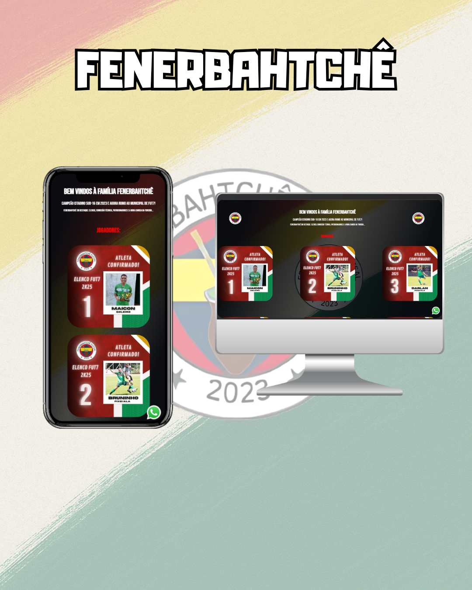

Renan Carlo Siebert
Sobre Mim:
Olá, sou Renan Carlo Siebert. Atualmente atuo como Jovem Aprendiz na área de Almoxarifado,
onde desenvolvo habilidades como organização, dedicação e trabalho em equipe.
Sempre fui apaixonado por tecnologia e estou em transição de carreira para me tornar Desenvolvedor
Front-End.
Tenho experiência prática com HTML, CSS e JavaScript, criando projetos que estimulam minha criatividade e
ampliam meus conhecimentos técnicos.
Minha motivação vem da admiração pelo poder transformador da tecnologia e da vontade de contribuir com
soluções criativas e eficientes.
Estou em constante aprendizado e aberto a novas oportunidades para crescer profissionalmente.
MEUS PROJETOS
PROJETO FENERBAHTCHÊ

Projeto desenvolvido por mim, com o objetivo de representar o time Fenerbahtchê, fundado em 2023.
Para dar mais visibilidade ao projeto, criei o site oficial utilizando HTML, CSS e JavaScript, totalmente
responsivo e voltado à melhor experiência do usuário.
O site apresenta as principais informações do time e agora conta também com uma página de pagamento
integrada, ampliando suas funcionalidades.
Principais recursos do site:
- Exibição do elenco completo de jogadores.
- Sessão dedicada aos patrocinadores do time.
- Comissão técnica apresentada de forma clara.
- Página exclusiva com a nova camisa da torcida.
- Página de pagamento para suporte e contribuições.
Esse projeto foi uma excelente oportunidade para aplicar na prática meus conhecimentos em desenvolvimento web
responsivo,
além de fortalecer minhas habilidades em iniciativa, organização e trabalho em equipe.
Clique Aqui Para Acessar O Projeto
PROJETO CONVERT MONEY

Projeto DevClub -
Desenvolvi um Conversor de Moedas como parte do meu aprendizado em JavaScript, com foco em lógica de
programação, manipulação de DOM e interatividade com dados dinâmicos.
A aplicação permite converter valores entre diferentes moedas (como Real, Dólar e Euro) de forma automática
e intuitiva, proporcionando uma experiência prática e visualmente organizada.
O projeto também reforçou meus conhecimentos em HTML e CSS, garantindo um layout simples e responsivo.
Tecnologias: HTML, CSS, JavaScript
Principais aprendizados e habilidades aplicadas:
- Manipulação do DOM e eventos em JavaScript
- Cálculos dinâmicos e atualização em tempo real
- Estruturação de layout e design responsivo com HTML e CSS
- Desenvolvimento de soluções interativas no front-end
Clique Aqui Para Acessar O Projeto
PROJETO JOKENPÔ

Desenvolvi um jogo de Jokenpô (Pedra, Papel e Tesoura) como parte da minha evolução nos estudos de HTML, CSS
e JavaScript.
O projeto possibilitou a criação de uma interface interativa, onde o usuário joga contra o computador, com
placar atualizado automaticamente e resultados exibidos dinamicamente na tela.
Tecnologias utilizadas: HTML5, CSS3, JavaScript
Principais aprendizados e habilidades aplicadas:
- Manipulação de DOM e eventos em JavaScript
- Atualização dinâmica de conteúdo e lógica de jogo
- Criação de interface interativa e responsiva com HTML e CSS
- Desenvolvimento de soluções front-end com foco em experiência
do usuário
Clique Aqui Para Acessar O Projeto
PROJETO CRONÔMETRO
.png)
Projeto DevClub
Desenvolvi um cronômetro como parte do meu aprendizado em JavaScript, com foco em lógica, eventos e controle
de tempo.
A aplicação permite iniciar, pausar e zerar a contagem, utilizando conceitos de setInterval, clearInterval e
manipulação do DOM. O layout foi estruturado com HTML e CSS, garantindo uma interface limpa, funcional e
responsiva.
Tecnologias: HTML, CSS, JavaScript
Principais aprendizados e habilidades aplicadas:
- Controle de tempo e lógica em JavaScript
- Manipulação de DOM e eventos
- Estruturação de layout responsivo com HTML e CSS
- Desenvolvimento de soluções front-end dinâmicas
Clique Aqui Para Acessar O Projeto
PROJETO MINI CALCULADORA
.png)
Projeto DevClub
Desenvolvi uma Mini Calculadora durante meus estudos no DevClub, com foco em HTML, CSS e JavaScript.
O projeto realiza as operações matemáticas básicas: adição, subtração, multiplicação e divisão, permitindo
praticar lógica de programação, manipulação do DOM e organização de código.
Além da funcionalidade, priorizei um layout simples, limpo e intuitivo, garantindo fácil interação para o
usuário.
Tecnologias utilizadas: HTML, CSS, JavaScript
Principais aprendizados e habilidades aplicadas:
- Desenvolvimento da lógica para operações matemáticas
- Manipulação dinâmica do DOM com JavaScript
- Estruturação de interface responsiva e funcional com HTML e CSS
- Organização de código e boas práticas de front-end
Clique Aqui e Veja o Projeto
PROJETO SORTEIO

Desenvolvi um sorteador de números aleatórios utilizando JavaScript, permitindo que o usuário defina um
intervalo de valores (mínimo e máximo) e receba automaticamente um número sorteado.
Tecnologias: HTML, CSS, JavaScript
O projeto foi uma oportunidade para praticar:
- Manipulação do DOM para atualizar dinamicamente a interface
- Validação de inputs garantindo que os valores inseridos sejam corretos
- Interatividade com o usuário em tempo real
Um projeto prático focado em lógica de programação e aplicações dinâmicas no front-end, ideal para
demonstrar
habilidades em desenvolvimento web.
Clique Aqui e Veja o Projeto
PROJETO SUPER MÁRIO BROSS

Landing Page Temática — Projeto DevClub - Desenvolvi uma landing page temática durante minha formação em
Desenvolvimento Web no DevClub, com o objetivo de praticar HTML, CSS e JavaScript em um cenário criativo.
O projeto permitiu reforçar habilidades em criação de páginas interativas, manipulação de DOM, validação de
formulários e integração com canais de contato.
Tecnologias: HTML, CSS, JavaScript
A página simula que o personagem Mario oferece seus serviços como encanador, incluindo:
- Design temático inspirado no universo Super Mario Bros
- Botão flutuante de contato via WhatsApp
- Formulário de atendimento simulando solicitação de orçamento
- Interatividade e responsividade, garantindo boa experiência em diferentes dispositivos
Um projeto prático focado em lógica de programação e aplicações dinâmicas no front-end, ideal para
demonstrar
habilidades em desenvolvimento web.
Clique Aqui e Veja o Projeto